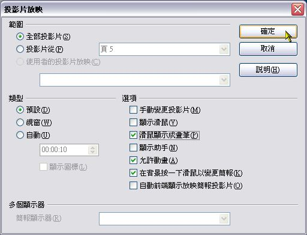
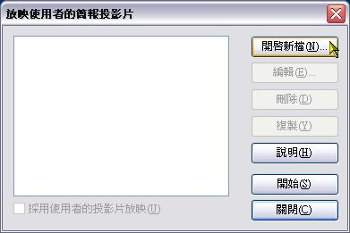
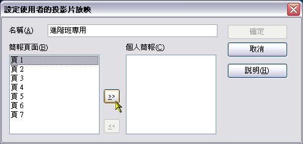
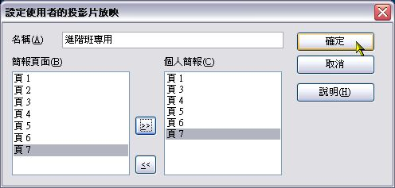
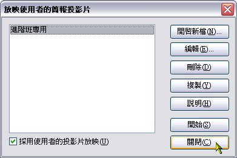

也紀念我們永遠的朋友 李士傑先生（Shih-Chieh Ilya Li）。
淺談簡報設計的技巧～以 Impress 為例（4）
※ 特別加映篇
第一場：快速改變投影片的順序
製作好簡報檔後，要進行放映是很簡單的事，不過放映前應該再檢查一下比較好。檢查什麼呢？首先是播放的順序是不是符合講解的邏輯。有時候在製作投影片過程中，常常出現事前規劃時所沒有的靈感，做好了之後，如果不從整體的角度去檢視，很容易和原本的規劃有所衝突（衝突不一定是壞，也許是更好），此時也許得重新安排前後的順序，甚至某些投影片必須加以捨棄，千萬不要因為某張投影片是難得的「傑作」而捨不得「砍掉」，否則和整體不合的結果，可是會毀了簡報的效果。
步驟一：
開啟要進行檢視的簡報檔後，按一下「投影片瀏覽」標籤。
步驟二：
每張投影片都會縮小，方便以整體的方式檢視投影片（若投影片很多，還是會有部份無法顯示出來，此時必須捲頁才能檢視），如此我們就能輕鬆檢視各張投影片的前後順序，如果發現順序安排上有不合適者，那麼直接拖曳該投影片到合適的地方就好。（這裡的範例是把原有的第五張拖曳到第三和第四張之間）
步驟三：
拖曳完畢後，頁次編號會自動變更。當然，以這種模式要刪除投影片也很快，只要點選要刪除的投影片後，按Delete鍵就可以了。
第二場：設定放映的效果
除了確定放映順序之外，另一個可能要思考的問題，就是要決定放映的效果。這裡所說的效果，並不是製作時所加入的特效，而是針對放映時，基於講解投影片內容所需的效果，例如讓滑鼠游標變成畫筆，講解時就可以邊講邊畫重點，讓觀眾更清楚當時是在講什麼！
步驟一：
按一下功能表的「投影片放映」＼「投影片放映設定」。
步驟二：

這裡有許多和放映時相關的設定，大家可根據自己的需要來選。像Attila在簡報時，比較喜歡讓滑鼠游標變成畫筆的樣子，觀眾的目光會因此而比較願意跟著滑鼠游標移動（因為平常太習慣標準狀態的滑鼠游標，此時若有所不同反而會引起注意）。所以這裡的範例我們勾選「滑鼠顯示成畫筆」，然後按「確定」。
步驟三：
接著來看看效果如何。按一下「簡報」工具列的「投影片放映」鈕。
步驟四：
放映簡報時，滑鼠的游標就變成畫筆的模樣，而且還可以在上面畫畫，以便強調重點。那新加入的線條會永久成為投影片的一份子嗎？並不會！結束放映後，這些用畫筆畫上去的線條就會消失。
第三場：設定多個不同放映張數的方法
放映時另一個會碰到的問題，就是當我們必須要在各個不同場合簡報時，可能得要根據每次所面對的觀眾，而決定要放映哪幾張投影片。例如同樣是教人家製作簡報的投影片，對於有經驗和基礎的人來說，必定要準備特殊的「絕招」才行，但是對於初學者來說，這些「絕招」可能太難，因為他們可能連製作的基本知識和技巧都不會，無法瞭解「絕招」的精髓，所以簡報時這一部分的投影片就不該使用。
只是為了同一個主題而得做好幾個簡報，似乎有點麻煩。此時可以利用簡報軟體的功能，先設定好數個不同的放映內容，之後就可根據不同的場合，選擇適合該場合的放映內容。如此不但能減少製作簡報檔的數量和時間，也能省去一些檔案管理上的麻煩。
步驟一：
接下來我們要設定不同數量的放映內容。因此就按一下功能表的「投影片放映」＼「使用者的放映簡報投影片」
步驟二：

在「放映使用者的簡報投影片」視窗中，按「開啟新檔」。
步驟三：

此時會開啟另一個視窗，我們在「名稱」欄位內輸入放映用途的名稱，接著在「簡報頁面」欄位內點選要放映的投影片，然後按一下中間的「加入」鈕。
步驟四：

「個人簡報」的欄位內會顯示加進來的投影片，把所有想要放映的投影片都加進來後（注意！範例中沒有加入頁2這張投影片），按一下「確定」。
步驟五：

回到前一個視窗時，左邊的欄位會出現已經建立好放映內容的名稱，記得勾選「採用使用者的投影片放映」，之後放映時才會以這裡的設定值來放映。（在本例中，放映過程中就只會播放頁1、頁3、頁4、頁5、頁6、頁7，不會出現頁2）
我們可以針對這個簡報檔設定很多個不同的放映值，日後想要使用某個放映值，在放映前記得要先開啟這個視窗，指定想要的放映值即可。
（待續）
You may be interested in the following articles:
- 淺談簡報設計的技巧～以 Impress 為例（3） - 2009-10-11
- 淺談簡報設計的技巧～以 Impress 為例（2） - 2009-09-25
- 淺談簡報設計的技巧～以 Impress 為例（1） - 2009-09-13
Special


Address：No.128, Sec.2, Academia Rd., Institute of Information Science, Academia Sinica, Nangang District, Taipei City 11529, Taiwan (R.O.C).
Privacy Policy. Terms-of-use